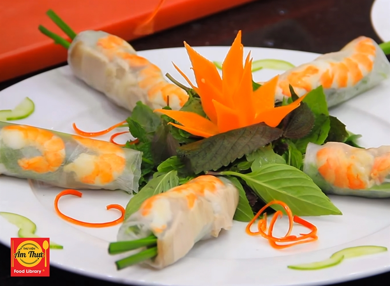
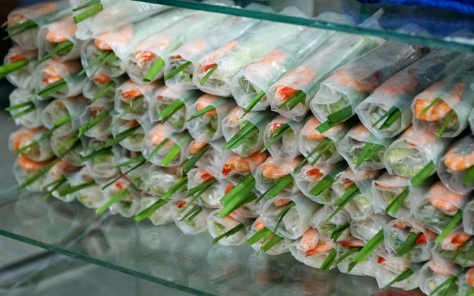
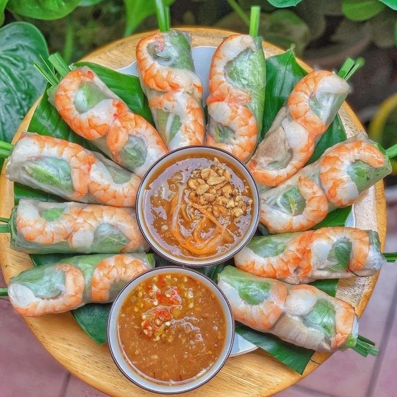

People love Spring Rolls because it is light, fresh, and healthy. The rolls are made with rice paper, vegetables, herbs, and usually shrimp or pork, which creates a refreshing flavor. They are often served with a tasty dipping sauce that makes the dish even more delicious. Check out our recipe.

